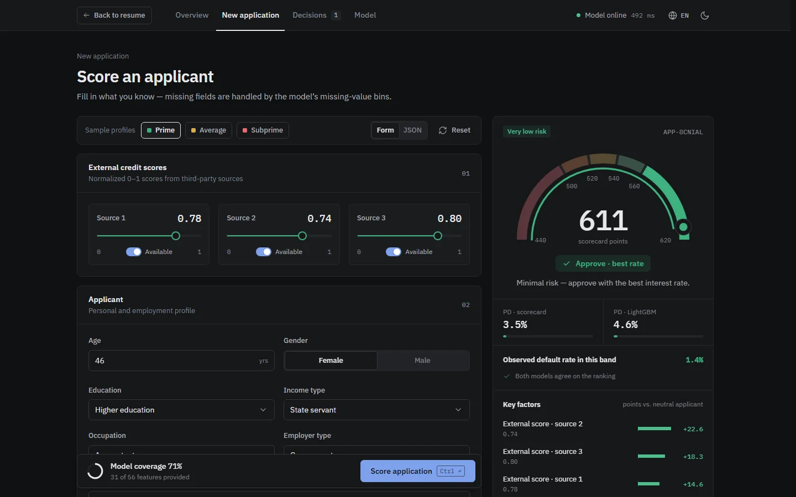

CredenceHome Credit Default Risk
A probability-of-default model and a live scoring service, built the way a retail bank would build one.

This is a screenshot. The app itself is running. Score an application without leaving the page; it loads from credit.mehdiyev.dev.
Run it hereProblem
A lender has to decide on every application, price the risk and explain the decision. The model has to rank applicants well, stay stable on new ones, and be readable by risk and compliance teams.
Approach
- Joined 7 Home Credit tables (307,511 applications plus bureau, previous-loan, installment, card and POS history) into per-applicant features.
- Selected features by Information Value, encoded them as Weight of Evidence with optimal monotonic binning and removed correlated pairs, leaving 56.
- Fitted a logistic-regression scorecard scaled to points (PDO 20, 600 points at 19:1 odds) and a LightGBM benchmark explained with SHAP.
- Validated on 61,503 out-of-time applications never used in training: AUC, KS, Gini, PSI and calibration.
- Served it with FastAPI and a server-rendered UI: every application gets a score, PD, risk band, decision and reason codes.
Results
| Metric | Scorecard | LightGBM | Industry min. |
|---|---|---|---|
| AUC | 0.762 | 0.772 | 0.65 |
| Gini | 0.524 | 0.543 | 0.30 |
| KS | 0.399 | 0.409 | 0.20 |
| PSI | 0.0001 | — | < 0.10 |
Out-of-time sample of 61,503 applications. The scorecard is the model the live Credence service runs; LightGBM is the benchmark on the same 56 features.
- Seven source tablesApplications, bureau, previous loans, installments, POS and card balances
- Feature engineeringDelinquency, utilization and approval history per applicant
- WoE / IV selectionIV ≥ 0.02, correlation < 0.85, 56 features
- Scorecard + benchmarkLogistic regression in points; LightGBM with SHAP
- Out-of-time validation61,503 applications: AUC, KS, Gini, PSI
- FastAPI servicePOST /score returns score, PD, band, action, contributions
- Credence UIApplication form, decision log, model documentation
Product details and decision policy
What the app does
- Application form with sample profiles and a raw JSON mode
- Decision card: PD from both models, risk band and reason codes
- Decision log with filters and CSV export, kept only in your browser
- Model page: pipeline, validation, score scaling and decision policy
- English, Russian and Azerbaijani; light and dark themes
| Score | Risk band | Action | Default rate | Share |
|---|---|---|---|---|
| ≥ 560 | Very low | Approve, best rate | 1.4% | 13% |
| 540–559 | Low | Approve | 2.6% | 21% |
| 520–539 | Medium | Conditional approval | 4.9% | 26% |
| 500–519 | High | Manual review | 9.9% | 21% |
| < 500 | Very high | Reject | 22.3% | 18% |
Stack: Pythonpandasscikit-learnOptimalBinningLightGBMSHAPFastAPIJinja2